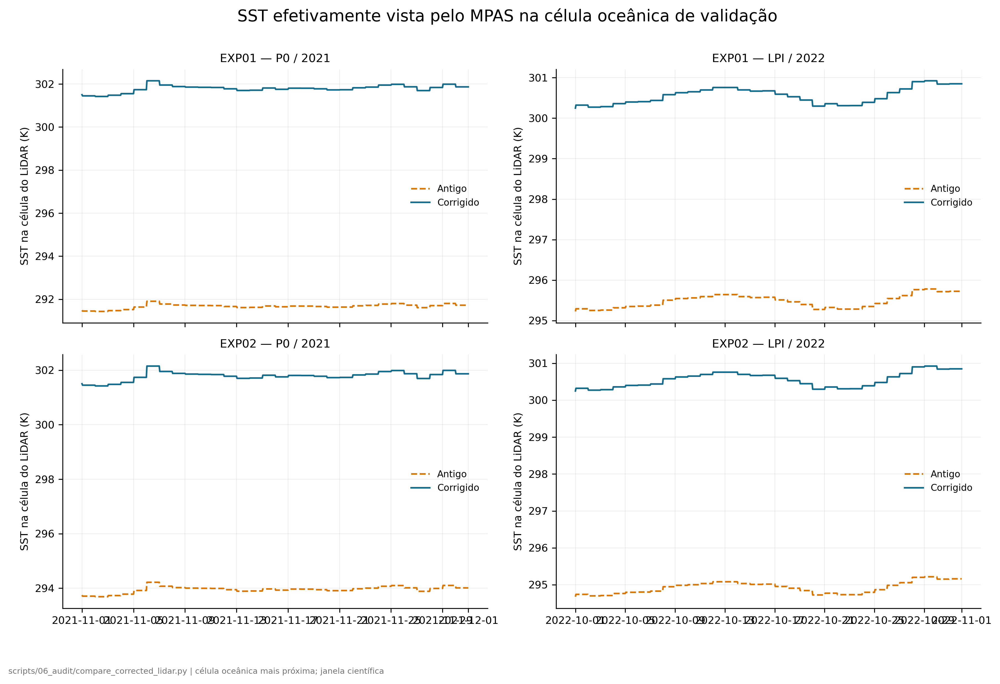
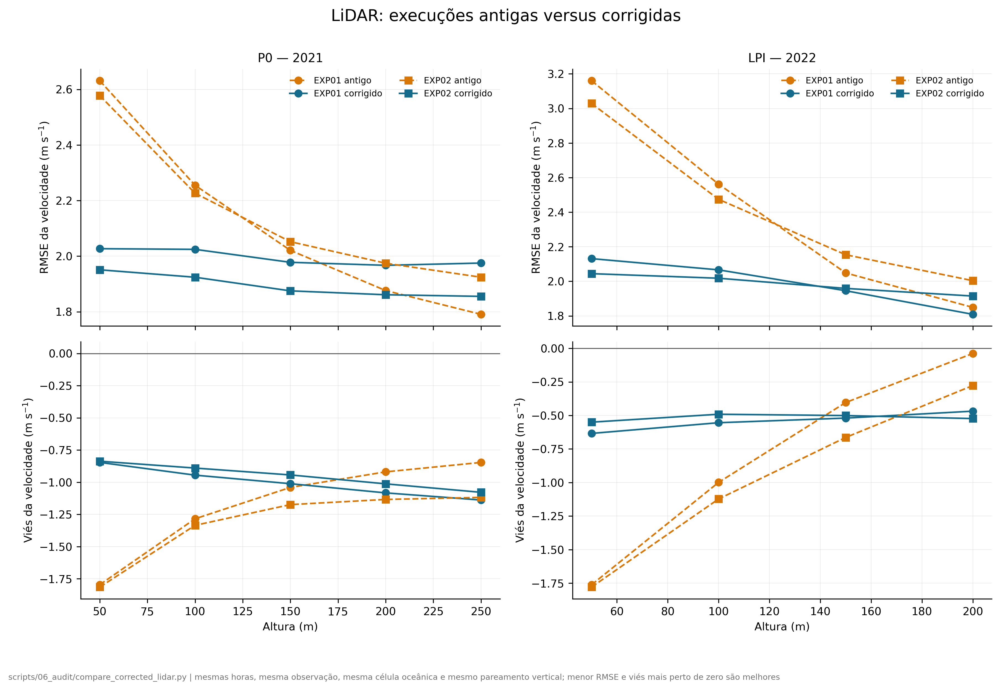
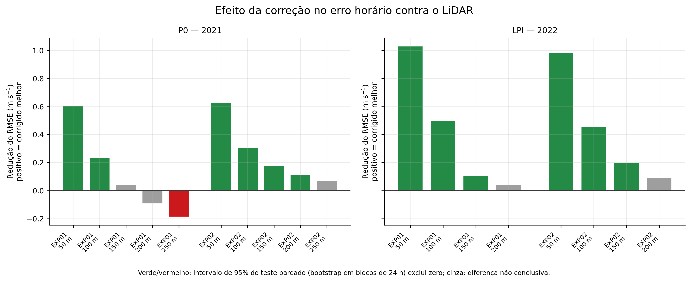
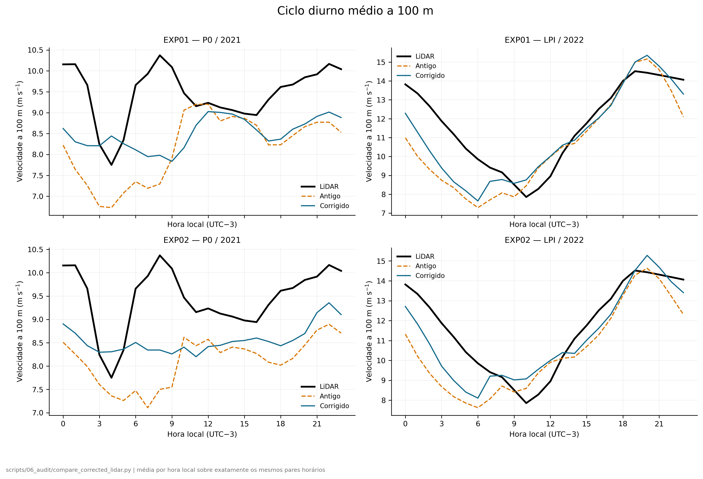

RELATÓRIO DE AUDITORIA — NÃO SUBSTITUI O HTML TÉCNICO OFICIAL
EXP01 e EXP02: antigo × corrigido, exclusivamente contra LiDAR
Objetivo: verificar se a correção do preenchimento terrestre da OISST removeu a SST costeira artificial e se as novas integrações mudaram — e melhoraram — a comparação do vento com P0 e LPI. Gerado em 2026-10-08 12:21 UTC.
1. Veredito objetivo
A correção técnica é considerada comprovada somente se duas condições forem verdadeiras ao mesmo tempo: (1) a SST na célula oceânica deixa de carregar o valor terrestre interpolado; e (2) todos os pares antigos/corrigidos usam exatamente as mesmas observações, horas, célula e alturas. Melhorar o vento em cada métrica não é requisito lógico para provar a correção do dado de entrada: o modelo possui outros erros. Por isso o relatório separa integridade da correção de efeito na habilidade.
2. Integridade das novas integrações
| Experimento | Período | Arquivos ativos | Sequência lógica | Janela científica | NetCDF | Logs | Observação | Status |
|---|---|---|---|---|---|---|---|---|
| EXP01 | 2021 | 985 | 985/985 | 721/721 | sim | limpos | — | VÁLIDO |
| EXP01 | 2022 | 985 | 985/985 | 745/745 | sim | limpos | — | VÁLIDO |
| EXP02 | 2021 | 984 | 985/985 | 721/721 | sim | limpos | 1 arquivo preservado do reinício (2021-10-25 00:00:00) | VÁLIDO |
| EXP02 | 2022 | 985 | 985/985 | 745/745 | sim | limpos | — | VÁLIDO |
“Sequência lógica” conta um arquivo de checkpoint preservado quando ele completa uma lacuna causada pelo reinício. Nenhum arquivo foi movido, copiado ou sobrescrito. Todos os arquivos da sequência lógica foram abertos com netCDF4 e tiveram um valor de SST realmente lido.
3. Comparação controlada
- O LiDAR de 10 minutos foi submetido ao mesmo controle de qualidade já documentado no projeto.
- Os registros válidos foram agregados em médias horárias centradas no horário do MPAS, exigindo pelo menos 4 amostras de 10 minutos.
- Antigo e corrigido foram comparados somente na interseção das mesmas horas.
- Foi usada a mesma célula oceânica mais próxima e a mesma correspondência vertical entre centro da camada do MPAS e canal do LiDAR.
- A significância da mudança do MSE foi testada com bootstrap móvel em blocos de 24 h, preservando autocorrelação e ciclo diurno.
P0/2021 e LPI/2022 são evidências independentes. ERA5 e INMET foram deliberadamente excluídos desta auditoria, conforme o escopo: aqui só o LiDAR decide.
4. O defeito de SST realmente desapareceu?

| Sítio | Experimento | Média antiga | Média corrigida | Mudança | Mínimo antigo | Mínimo corrigido |
|---|---|---|---|---|---|---|
| LPI | EXP01 | 295.48 | 300.55 | +5.07 | 295.23 | 300.25 |
| LPI | EXP02 | 294.92 | 300.55 | +5.63 | 294.68 | 300.25 |
| P0 | EXP01 | 291.67 | 301.79 | +10.12 | 291.43 | 301.42 |
| P0 | EXP02 | 293.96 | 301.79 | +7.83 | 293.69 | 301.42 |
5. O vento ficou mais próximo do LiDAR?


| Sítio | Exp. | Alt. (m) | N | Viés ant. | Viés corr. | RMSE ant. | RMSE corr. | Redução RMSE | r ant. | r corr. | Viés WPD ant. (%) | Viés WPD corr. (%) | Fase ant. (h) | Fase corr. (h) | Teste MSE |
|---|---|---|---|---|---|---|---|---|---|---|---|---|---|---|---|
| LPI | EXP01 | 50 | 740 | -1.76 | -0.63 | 3.16 | 2.13 | +1.03 | 0.56 | 0.70 | -33.7 | -15.0 | +1 | +1 | corrigido melhor |
| LPI | EXP01 | 100 | 740 | -1.00 | -0.55 | 2.56 | 2.07 | +0.50 | 0.65 | 0.74 | -21.1 | -13.5 | +1 | +1 | corrigido melhor |
| LPI | EXP01 | 150 | 740 | -0.40 | -0.52 | 2.05 | 1.95 | +0.10 | 0.74 | 0.77 | -10.2 | -13.2 | +1 | +1 | corrigido melhor |
| LPI | EXP01 | 200 | 740 | -0.04 | -0.47 | 1.85 | 1.81 | +0.04 | 0.79 | 0.81 | -1.9 | -12.7 | +1 | +0 | sem diferença conclusiva |
| LPI | EXP02 | 50 | 740 | -1.78 | -0.55 | 3.03 | 2.04 | +0.98 | 0.58 | 0.70 | -36.6 | -14.9 | +1 | +1 | corrigido melhor |
| LPI | EXP02 | 100 | 740 | -1.12 | -0.49 | 2.47 | 2.02 | +0.46 | 0.66 | 0.73 | -26.0 | -13.7 | +1 | +1 | corrigido melhor |
| LPI | EXP02 | 150 | 740 | -0.66 | -0.50 | 2.15 | 1.96 | +0.19 | 0.72 | 0.76 | -17.4 | -14.1 | +1 | +1 | corrigido melhor |
| LPI | EXP02 | 200 | 740 | -0.28 | -0.52 | 2.00 | 1.91 | +0.09 | 0.75 | 0.78 | -8.7 | -14.8 | +1 | +1 | sem diferença conclusiva |
| P0 | EXP01 | 50 | 507 | -1.80 | -0.85 | 2.63 | 2.03 | +0.60 | 0.42 | 0.41 | -47.9 | -29.1 | +2 | +4 | corrigido melhor |
| P0 | EXP01 | 100 | 507 | -1.28 | -0.95 | 2.26 | 2.02 | +0.23 | 0.46 | 0.43 | -35.2 | -30.0 | +3 | +4 | corrigido melhor |
| P0 | EXP01 | 150 | 507 | -1.04 | -1.01 | 2.02 | 1.98 | +0.04 | 0.50 | 0.45 | -28.8 | -30.4 | +4 | -10 | sem diferença conclusiva |
| P0 | EXP01 | 200 | 503 | -0.92 | -1.08 | 1.88 | 1.97 | -0.09 | 0.53 | 0.46 | -25.3 | -31.2 | +4 | +4 | sem diferença conclusiva |
| P0 | EXP01 | 250 | 497 | -0.85 | -1.14 | 1.79 | 1.98 | -0.18 | 0.54 | 0.46 | -23.0 | -31.7 | +4 | -10 | corrigido pior |
| P0 | EXP02 | 50 | 507 | -1.81 | -0.84 | 2.58 | 1.95 | +0.63 | 0.44 | 0.45 | -49.5 | -29.7 | +6 | -10 | corrigido melhor |
| P0 | EXP02 | 100 | 507 | -1.34 | -0.89 | 2.23 | 1.92 | +0.30 | 0.48 | 0.47 | -37.0 | -29.4 | -10 | -10 | corrigido melhor |
| P0 | EXP02 | 150 | 507 | -1.17 | -0.94 | 2.05 | 1.88 | +0.18 | 0.51 | 0.49 | -32.3 | -29.5 | -10 | -10 | corrigido melhor |
| P0 | EXP02 | 200 | 503 | -1.13 | -1.01 | 1.97 | 1.86 | +0.11 | 0.53 | 0.50 | -30.5 | -30.2 | -10 | -10 | corrigido melhor |
| P0 | EXP02 | 250 | 497 | -1.12 | -1.08 | 1.92 | 1.86 | +0.07 | 0.54 | 0.51 | -29.4 | -31.0 | -10 | -10 | sem diferença conclusiva |

6. A mudança é maior que a variabilidade amostral?
Para cada altura foi calculada a diferença pareada (erro_antigo² − erro_corrigido²). Valor positivo favorece o corrigido. O intervalo de 95% vem de 2.000 reamostragens em blocos móveis de 24 h.
| Sítio | Exp. | Alt. (m) | ΔMSE | IC 95% | RMSE ant. | RMSE corr. | Conclusão |
|---|---|---|---|---|---|---|---|
| LPI | EXP01 | 50 | +5.447 | [+4.246; +6.520] | 3.16 | 2.13 | corrigido melhor |
| LPI | EXP01 | 100 | +2.294 | [+1.516; +3.024] | 2.56 | 2.07 | corrigido melhor |
| LPI | EXP01 | 150 | +0.411 | [+0.040; +0.818] | 2.05 | 1.95 | corrigido melhor |
| LPI | EXP01 | 200 | +0.147 | [-0.143; +0.473] | 1.85 | 1.81 | sem diferença conclusiva |
| LPI | EXP02 | 50 | +4.995 | [+3.864; +6.073] | 3.03 | 2.04 | corrigido melhor |
| LPI | EXP02 | 100 | +2.050 | [+1.421; +2.678] | 2.47 | 2.02 | corrigido melhor |
| LPI | EXP02 | 150 | +0.801 | [+0.442; +1.212] | 2.15 | 1.96 | corrigido melhor |
| LPI | EXP02 | 200 | +0.349 | [-0.008; +0.796] | 2.00 | 1.91 | sem diferença conclusiva |
| P0 | EXP01 | 50 | +2.816 | [+1.611; +3.925] | 2.63 | 2.03 | corrigido melhor |
| P0 | EXP01 | 100 | +0.987 | [+0.202; +1.662] | 2.26 | 2.02 | corrigido melhor |
| P0 | EXP01 | 150 | +0.172 | [-0.522; +0.721] | 2.02 | 1.98 | sem diferença conclusiva |
| P0 | EXP01 | 200 | -0.349 | [-1.055; +0.214] | 1.88 | 1.97 | sem diferença conclusiva |
| P0 | EXP01 | 250 | -0.695 | [-1.485; -0.116] | 1.79 | 1.98 | corrigido pior |
| P0 | EXP02 | 50 | +2.839 | [+2.085; +3.684] | 2.58 | 1.95 | corrigido melhor |
| P0 | EXP02 | 100 | +1.255 | [+0.788; +1.737] | 2.23 | 1.92 | corrigido melhor |
| P0 | EXP02 | 150 | +0.695 | [+0.308; +1.079] | 2.05 | 1.88 | corrigido melhor |
| P0 | EXP02 | 200 | +0.435 | [+0.039; +0.797] | 1.97 | 1.86 | corrigido melhor |
| P0 | EXP02 | 250 | +0.260 | [-0.154; +0.603] | 1.92 | 1.86 | sem diferença conclusiva |
7. Limites desta auditoria
- Há somente um mês por sítio; o resultado não mede robustez sazonal ou interanual.
- Os dois LiDARes amostram pontos costeiros específicos; a auditoria não substitui a avaliação espacial, ERA5 ou INMET do relatório oficial.
- A correção pode remover um erro de SST e ainda assim expor outros erros do MPAS. Por isso “correção confirmada” e “vento melhor em toda métrica” são conclusões diferentes.
- Nenhum resultado antigo foi sobrescrito. Esta página existe para revisão antes de qualquer substituição oficial.